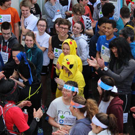
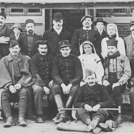
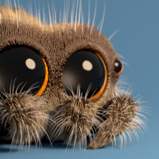
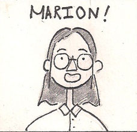
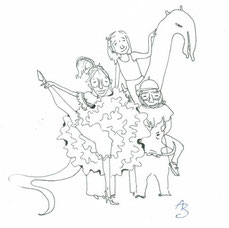

Journaux déjà parus

- Action Contre la faim
- Conseils pour le BAC
- Data Center

- L'internat en 14-18
- Le Conseil de Vie Lycéene
- Le tri sélectif
- La cave de Natasha Preston

- Maison des lycéens
- Foyer: Débat
- Friperie
- Escalier n°1
- St Valentin

- Yolande d'Anjou
- Prix Goncourt
- Les pesticides
- L'internat
- Françoise Sablon
- Les agents
- La légende de Phae'l
- Grêves pour le climat
- Escalier n°2
- Les filles de l'air
- Ourika

- Parcoursups
- Mr. Carbonnier
- Une année à Duplessis
- Anecdotes sur les profs
- La commission durable